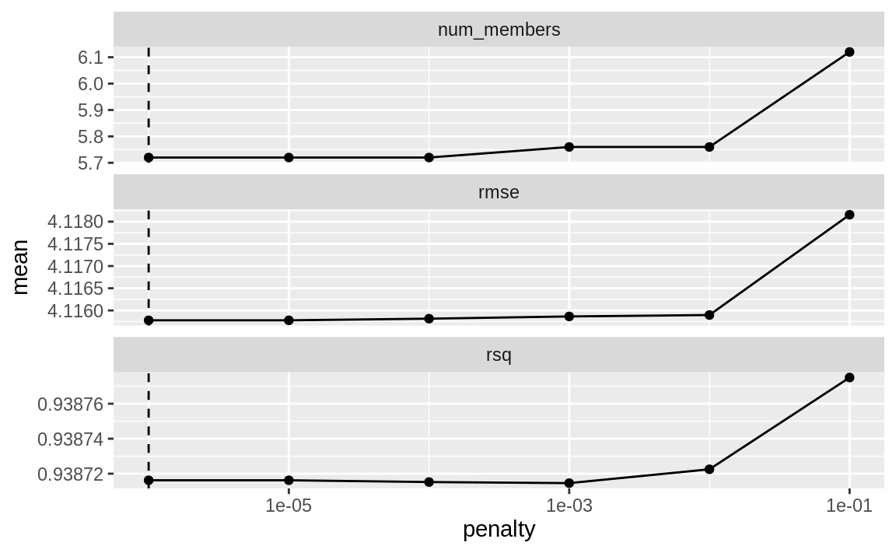
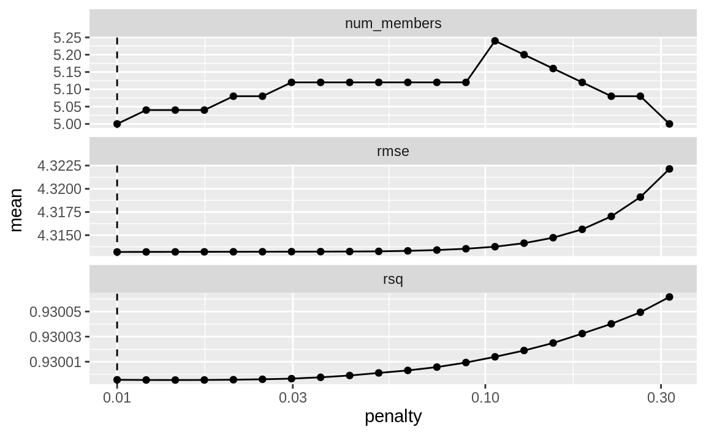
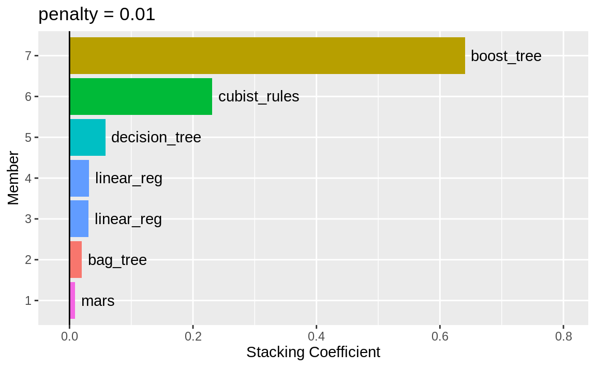

| Sample # | Bagged Tree | MARS 1 | MARS 2 | Cubist 1 | ... | Cubist 25 | ... |
|---|---|---|---|---|---|---|---|
| 1 | 25.18 | 17.92 | 17.21 | 17.79 | 17.82 | ||
| 2 | 5.18 | -1.77 | -0.74 | 2.83 | 3.87 | ||
| 3 | 9.71 | 7.26 | 5.91 | 6.31 | 8.60 | ||
| 4 | 25.21 | 20.93 | 21.52 | 23.72 | 21.61 | ||
| 5 | 6.33 | 1.53 | 0.14 | 3.60 | 4.57 | ||
| 6 | 7.88 | 4.88 | 1.74 | 7.69 | 7.55 |
20 Ensembles of Models
通过整合多个单一学习器的预测结果以形成最终预测，模型集成方法能够构建出性能卓越的最终模型。目前最流行的几种集成方法包括自助法（Bagging，Breiman 1996a）、随机森林（Ho 1995；Breiman 2001）以及提升法（Boosting，Freund 和 Schapire 1997）。这些方法均基于对同类型模型（如分类树）的多个版本预测结果进行组合。然而，最早出现的集成方法之一则是模型堆叠法（model stacking，Wolpert 1992；Breiman 1996）。
模型堆叠可结合任何类型模型的预测结果。例如，逻辑回归、分类树和支持向量机都可以被纳入到一个堆叠集成中。
本章将介绍如何使用stacks包来堆叠预测模型。我们将复用第15章中的结果，当时曾评估了多个模型，以预测混凝土混合料的抗压强度。
构建堆叠集成模型的过程如下：
- 汇总通过重采样生成的留出预测结果，组成训练集。
- 构建一个模型，用于融合这些预测结果。
- 对于集成中的每个成员，使用原始训练集来拟合该模型。
在接下来的章节中，我们将详细描述这一过程。不过，在继续之前，我们先明确一下“模型”可能指代的各种术语及其差异。特别是在进行复杂的建模分析时，“模型”这个词很容易变得含义过于宽泛！让我们以第15章中创建的多层感知器（MLP）模型（又称神经网络）为例进行说明。一般来说，我们会将MLP模型视为一种模型类型。线性回归和支持向量机则是其他类型的模型。
调参是建模的一个重要环节。在第15章中，我们曾对MLP模型进行了25种调参值的优化。而在之前的章节中，我们把这些候选的调参值或模型配置称为“模型配置”。此外，在集成学习的相关文献中，这些模型也被称为“基模型”。我们将使用“候选成员”一词来描述可能被纳入堆叠集成模型中的各种模型配置（涵盖所有模型类型）。这意味着，一个集成模型可以包含不同类型的模型（例如，树模型和神经网络），也可以包含同一种模型的不同配置（例如，深度不同的树模型）。
Creating the Training Set for Stacking
构建堆叠集成模型的第一步，依赖于通过多次划分的重采样方案生成的评估集预测结果。对于训练集中的每个数据点，堆叠方法都需要某种形式的“样本外”预测：对于回归模型，这一预测即为预期输出值；而对于分类模型，则可直接使用预测的类别或概率，尽管后者的信息量比硬性分类预测更为丰富。针对一组模型，我们会构建一个数据集，其中行对应训练集中的样本，列则包含由这组模型分别产生的“样本外”预测结果。
在第15章中，我们使用了五次10折交叉验证来对数据进行重采样。这种重采样方案为每个训练集样本生成了五组评估集预测结果。此外，在其他多种重采样技术（如自助法）中，也可能出现多次的样本外预测。然而，为了实现堆叠集成方法，我们会将训练集中某个数据点的多次重复预测值取平均，从而确保每个训练集样本针对每个候选成员仅有一个最终预测值。
简单的验证集也可用于堆叠方法，因为tidymodels将其视为一种单一的重采样方式。
以具体为例，用于模型堆叠的训练集包含所有候选调参结果的列。Table 1 展示了前六行及部分选定的列。
Bagged Tree 模型仅有一列，因为它没有调优参数。此外，需要注意的是，MARS 模型仅通过一个参数（乘积度）进行调优，且该参数有两种可能的配置，因此此模型由两列表示。而大多数其他模型则有25列对应，如本例中的Cubist所示。对于分类模型，候选预测列将是预测的类别概率。由于这些列在每个模型中加起来等于1，因此可以省略其中一类的概率。
到目前为止，总结一下我们的进展：堆叠的第一步是，从每个候选模型中收集训练集的评估集预测结果。接下来，我们可以利用这些评估集预测，继续构建最终的堆叠集成模型。
要开始使用 stacks 包进行模型集成，首先使用stacks()函数创建一个空的数据堆栈，然后添加候选模型。回想一下，我们曾利用工作流集合，将多种多样的模型拟合到这些数据中。接下来，我们将以赛车比赛结果为例：
race_results
#> # A workflow set/tibble: 12 × 4
#> wflow_id info option result
#> <chr> <list> <list> <list>
#> 1 MARS <tibble [1 × 4]> <opts[3]> <race[+]>
#> 2 CART <tibble [1 × 4]> <opts[3]> <race[+]>
#> 3 CART_bagged <tibble [1 × 4]> <opts[3]> <rsmp[+]>
#> 4 RF <tibble [1 × 4]> <opts[3]> <race[+]>
#> 5 boosting <tibble [1 × 4]> <opts[3]> <race[+]>
#> 6 Cubist <tibble [1 × 4]> <opts[3]> <race[+]>
#> # ℹ 6 more rows在本例中，我们的语法是：
library(tidymodels)
library(stacks)
tidymodels_prefer()
concrete_stack <-
stacks() %>%
add_candidates(race_results)
#> Warning: The inputted `candidates` argument `boosting` generated notes during
#> tuning/resampling. Model stacking may fail due to these issues; see
#> `collect_notes()` (`?tune::collect_notes()`) if so.
concrete_stack
#> # A data stack with 12 model definitions and 18 candidate members:
#> # MARS: 1 model configuration
#> # CART: 1 model configuration
#> # CART_bagged: 1 model configuration
#> # RF: 1 model configuration
#> # boosting: 1 model configuration
#> # Cubist: 1 model configuration
#> # SVM_radial: 1 model configuration
#> # SVM_poly: 1 model configuration
#> # KNN: 3 model configurations
#> # neural_network: 1 model configuration
#> # full_quad_linear_reg: 5 model configurations
#> # full_quad_KNN: 1 model configuration
#> # Outcome: compressive_strength (numeric)请注意，基于重采样的方法（第13.5.5节）更为高效，因为它们可能无需对所有重抽样数据集中的所有配置进行评估。而堆叠法则要求所有候选成员都具备完整的重抽样结果集。因此，add_candidates()函数仅包含那些已获得完整结果的模型配置。
为什么使用race_results，而不是grid_results中包含的完整候选模型集？两者其实都可以用。我们发现，针对这些数据，race_results的表现更优。这可能是因为rece方法预先从更大的网格中筛选出了最佳模型（或模型们）。
如果我们没有使用workflowsets包，tune和finetune中的对象也可以直接传递给add_candidates()。这些对象既可包含网格搜索对象，也包括迭代式搜索对象。
Blend the Predictions
训练集的预测值与对应的观测结果数据被用来构建一个元学习模型，其中评估集的预测值作为观测结果数据的预测因子。元学习可以采用任何模型来实现，而最常用的模型则是正则化的广义线性模型，该模型涵盖了线性、逻辑斯蒂及多项式模型。尤其值得一提的是，通过Lasso惩罚（Tibshirani, 1996）进行正则化的方法具有多重优势：
使用Lasso惩罚能够从集成中剔除部分候选模型（有时甚至直接移除整个模型类型）。
集成中各候选模型之间的相关性往往非常高，而正则化有助于有效缓解这一问题。
Breiman（1996）还建议，当使用线性模型来融合预测结果时，将融合系数限制为非负值可能会有所帮助。我们通常认为这是个不错的建议，也是stacks包的默认设置（但可通过可选参数进行更改）。
由于我们的结果是数值型的，因此采用线性回归来构建元模型。拟合元模型的过程与以下操作一样简单：
set.seed(2001)
ens <- blend_predictions(concrete_stack)本文在预定义的套索惩罚值网格上评估了元学习模型，并采用内部重采样方法确定最佳值。如 Figure 1 所示的autoplot()方法，有助于我们判断默认的惩罚方法是否已足够：
autoplot(ens)

autoplot() method on the blended stacks object
Figure 1 的上半部分展示了元学习模型保留的候选集成成员的平均数量。我们可以看到，成员数量基本保持稳定，但随着其增加，均方根误差（RMSE）也随之上升。
默认范围在此处可能并未发挥良好作用。为了评估采用更大惩罚项的元学习模型，让我们传入一个额外的选项：
set.seed(2002)
ens <- blend_predictions(concrete_stack, penalty = 10^seq(-2, -0.5, length = 20))现在，在 Figure 2 中，我们看到一个区间，在这个区间内，集成模型的表现略逊于我们的首次融合方法（但差距并不明显）。随着成员数量的增加和惩罚力度的加大，\(R^2\)值反而有所提升。
autoplot(ens)

autoplot() method on the updated blended stacks object
在使用回归模型进行预测融合时，通常会限制融合参数为非负值。对于这些数据而言，这一约束条件导致许多潜在的集成成员被排除；即使在惩罚力度相对较低的情况下，最终形成的集成也仅限于最初十八个成员中的一小部分。
与最小RMSE相关的惩罚值为0.051。打印该对象可显示元学习模型的详细信息：
ens
#> ── A stacked ensemble model ─────────────────────────────────────
#>
#> Out of 18 possible candidate members, the ensemble retained 7.
#> Penalty: 0.01.
#> Mixture: 1.
#>
#> The 7 highest weighted members are:
#> # A tibble: 7 × 3
#> member type weight
#> <chr> <chr> <dbl>
#> 1 boosting_1_19 boost_tree 0.640
#> 2 Cubist_1_25 cubist_rules 0.231
#> 3 CART_1_05 decision_tree 0.0580
#> 4 full_quad_linear_reg_1_16 linear_reg 0.0317
#> 5 full_quad_linear_reg_1_17 linear_reg 0.0306
#> 6 CART_bagged_1_1 bag_tree 0.0200
#> # ℹ 1 more row
#>
#> Members have not yet been fitted with `fit_members()`.正则化线性回归元学习模型包含四种类型模型的七个融合系数。可以再次使用autoplot()方法，以展示每种模型类型的贡献，从而生成 Figure 3 。

boosted tree 和 Cubist对集成模型的贡献最大。对于该集成模型，预测结果采用以下公式：
\[\begin{align} \text{ensemble prediction} &=-0.71 \\ +&0.64 \times \text{boost tree prediction} \notag \\ +&0.23 \times \text{cubist rules prediction} \notag \\ +&0.058 \times \text{decision tree prediction} \notag \\ +&0.032 \times \text{linear reg prediction (config 1)} \notag \\ +&0.031 \times \text{linear reg prediction (config 2)} \notag \\ +&0.02 \times \text{bag tree prediction} \notag \\ +&0.0086 \times \text{mars prediction} \notag \end{align}\]
其中，方程中的预测变量是来自这些模型的预测抗压强度值。
Fit the Member Models
该集成模型包含七个候选成员，目前我们已掌握如何将它们的预测结果融合为集成模型的最终预测。然而，这些单个模型的拟合尚未完成。为了能够应用堆叠模型，还需额外训练七个模型，这些模型将使用包含原始预测变量的完整训练集。
CART bagged
boosting: number of trees = 1320, minimal node size = 31, tree depth = 15, learning rate = 0.088, minimum loss reduction = 8.89e-05, and proportion of observations sampled = 0.542
Cubist: number of committees = 98 and number of nearest neighbors = 2
CART: cost-complexity parameter = 5e-08 and minimal node size = 3
linear regression (quadratic features): amount of regularization = 6.28e-09 and proportion of lasso penalty = 0.636 (config 1)
linear regression (quadratic features): amount of regularization = 2e-09 and proportion of lasso penalty = 0.668 (config 2)
MARS: degree of interaction = 1
堆叠包中有一个函数fit_members()，它可以训练并返回这些模型：
ens <- fit_members(ens)这会使用为每个成员拟合的工作流对象更新堆叠对象。此时，堆叠模型即可用于预测。
Test Set Results
由于混合过程使用了重采样技术，我们可以估计，由7个成员组成的集成模型的RMSE约为4.12。回想一下第15章的内容，表现最佳的提升树在测试集上的RMSE为3.41。那么，该集成模型在测试集上的表现会如何呢？我们可以通过predict()来一探究竟：
这比我们最好的单一模型略好一些。与最佳单模型相比，堆叠方法通常能带来逐步提升的收益，这种情况相当常见。
Chapter Summary
本章展示了如何将不同模型组合成集成模型，以提升预测性能。通过构建集成模型的过程，系统能够自动筛选候选模型，最终找到一个性能更优的小型子集。此外，stacks包提供了一个流畅的接口，便于将重采样和调参结果整合到元模型中。